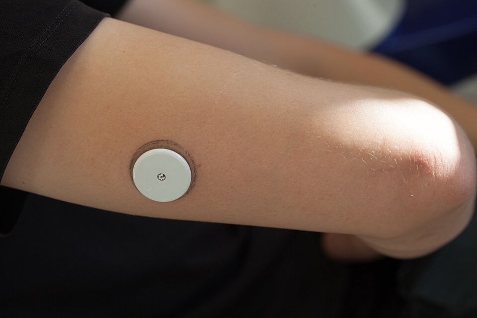

CGM for Type 3c Diabetes: What the Research Actually Says
By Leon Wilkinson, Type 3c patient and developer of GlycoTrace · Updated June 2026

Photo: Thirunavukkarasye-Raveendran / Wikimedia Commons, CC BY 4.0
{kind=link}
Quick answer
CGMs are increasingly used in Type 3c diabetes and clinical opinion supports their value, particularly for patients with frequent hypoglycaemia or high glucose variability. The research evidence is still growing: Type 3c was historically excluded from CGM trials because it was classified alongside Type 2, but dedicated studies are now under way. In the meantime, FreeStyle Libre and Dexcom G7 both work in Type 3c, and some patients qualify for NHS funding under insulin-treated diabetes criteria.
Why Type 3c was excluded from CGM research
Most CGM clinical trials have focused on Type 1 and, more recently, Type 2 diabetes. Type 3c was rarely included as a distinct population because it was, and still often is, misclassified as Type 2. This means the robust evidence base that exists for CGM in Type 1 does not yet exist specifically for Type 3c.
This does not mean CGMs do not work in Type 3c. It means researchers have not yet published large controlled trials specifically in this population. The clinical logic for CGM use in Type 3c is actually stronger in some respects than for Type 2, because Type 3c glucose variability is higher and the glucagon safety net is compromised.
This gap is beginning to close. A clinical trial registered at ClinicalTrials.gov (NCT05550480) is specifically studying the effect of continuous glucose monitoring on hypoglycaemia in adults with pancreatogenic diabetes. It is one of the first trials to treat Type 3c as a distinct population in this context. Results are expected within the next year or two.
Why the clinical argument for CGM is strong in Type 3c
Even without a dedicated evidence base, the reasons to use a CGM in Type 3c are compelling:
Glucose variability is higher. Studies on glycaemic variability in chronic pancreatitis consistently show wider swings than in Type 1 or Type 2 patients matched for HbA1c. A single HbA1c measurement hides this variability completely. A CGM reveals it.
Hypos are less predictable. With impaired glucagon secretion, blood sugar can fall fast and without the usual early warning signs that other types of diabetes produce. CGM trend arrows and low glucose alerts give you time to act before a reading becomes dangerous.
Post-meal patterns are complex. The interaction between PERT dose, meal fat content, and insulin timing produces glucose curves that are hard to interpret from finger-prick readings alone. A CGM shows you the full curve: how fast it rises, when it peaks, how steeply it falls. This is the data you need to optimise PERT and insulin together.
Nocturnal hypoglycaemia is a real risk. The impaired glucagon response makes overnight hypos more dangerous in Type 3c. CGM low alarms can alert you or a carer before a hypo becomes severe.
Which CGMs work for Type 3c
| Device | Scan or real-time | Alerts | NHS availability |
|---|---|---|---|
| FreeStyle Libre 2 | Scan + optional alerts | Low/high alerts via phone | Prescribable for insulin-treated Type 2 and Type 1 |
| FreeStyle Libre 3 | Real-time (no scan needed) | Real-time low/high alerts | Available on prescription; increasingly common |
| Dexcom G7 | Real-time | Urgent low, predictive alerts | Prescribable; often used when alerts are a priority |
| Dexcom One+ | Real-time | Basic alerts | Lower cost option; good for self-funders |
All four are CE-marked and validated for clinical use. FreeStyle Libre is the most widely prescribed in the UK and integrates directly with GlycoTrace via LibreLink.
How to access a CGM on the NHS if you have Type 3c
NICE guidance (NG17 and NG18) sets out criteria for funded CGM. The primary condition is Type 1 diabetes, but insulin-treated Type 2 patients with problematic hypoglycaemia also qualify under some criteria. Type 3c sits awkwardly in this framework because it is neither formally Type 1 nor Type 2.
In practice, your chances of getting funded CGM depend on how your diabetes has been classified on your records and how familiar your clinical team is with Type 3c. The arguments most likely to succeed:
- You are on multiple daily injections of insulin
- You have a documented history of severe or recurrent hypoglycaemia
- You have hypoglycaemia unawareness (reduced ability to feel a low coming on)
- Your HbA1c is persistently out of target despite appropriate management
If your team is uncertain whether you qualify, ask for a referral to a specialist diabetes team. Some integrated care boards (ICBs) have their own local guidance on CGM prescribing that may be more flexible than the NICE minimum.
If NHS funding is not available, self-funded FreeStyle Libre 2 sensors cost approximately £35 to £50 per month depending on supplier. Libre 3 is slightly more expensive. Dexcom sensors are typically more costly when self-funded.
Getting more from your CGM data
A CGM gives you a continuous stream of glucose data. But glucose data alone tells you what happened, not why. To understand the why, you need context: what you ate, when you took your Creon, how much insulin you gave, whether you exercised.
This is where a tracking app becomes essential. The LibreLink app shows you glucose curves, but it has no way to know what was on your plate or when you took your enzymes. Connecting LibreLink to GlycoTrace brings the CGM data together with your meal, PERT, and insulin logs in one place.
Over time, patterns emerge. You start to see which meals reliably cause a later peak, which PERT timing works best for high-fat meals, and which glucose curves precede a hypo. That kind of insight is genuinely hard to build from memory or from glucose data alone.
Connect your Libre to a tracker built for Type 3c
GlycoTrace imports your CGM readings and lets you log meals, PERT, and insulin alongside them. Free on Android.
What the ongoing research is looking at
The ClinicalTrials.gov study NCT05550480, titled "Effect of Continuous Glucose Monitoring on Hypoglycemia in Adults With Pancreatogenic Diabetes", is one of the first randomised trials to specifically assess CGM in this population. Its primary outcome is reduction in hypoglycaemic episodes. Secondary outcomes include time in range, HbA1c, and quality of life.
If this trial shows the results that clinical logic predicts, it will provide the evidence base to push for funded CGM access for Type 3c patients as a distinct group rather than relying on the current workaround of being classified under insulin-treated Type 2 criteria.
In the meantime, the lack of a Type 3c-specific evidence base does not mean CGM lacks clinical value for this group. It means the formal case has not yet been made in the medical literature. You should not have to wait for that paper to access a tool that demonstrably helps manage a condition as complex as Type 3c.
Common questions
Can people with Type 3c diabetes use a CGM? +
Yes. FreeStyle Libre, Dexcom G7, and other CGMs work in Type 3c just as they do in other types of diabetes. The clinical case for using them is strong given the high glucose variability and impaired glucagon response characteristic of Type 3c. The question is usually about NHS funding, not suitability.
Is CGM funded on the NHS for Type 3c? +
It depends on how your diabetes is classified and whether you meet the insulin-treated criteria with problematic hypoglycaemia. Type 3c sits in a gap in current NICE guidance. Patients on multiple daily injections with a history of severe hypos have the strongest case. Raise it with your diabetes team and ask specifically about the criteria under NG17 and NG18.
FreeStyle Libre or Dexcom: which is better for Type 3c? +
Both are accurate and clinically validated. FreeStyle Libre is more widely prescribed in the UK and is currently the easier route to NHS funding. Dexcom G7 has more sophisticated alert settings, including a predictive low alarm that warns you before your glucose actually drops below threshold. For Type 3c, where hypos can develop quickly, that predictive feature has real value. If Dexcom is not available on prescription, Libre 2 or Libre 3 are excellent alternatives.
Does CGM help with PERT timing and enzyme dosing? +
Indirectly, yes. Seeing the shape of your post-meal glucose curve tells you how your digestion is going. A flat, late-peaking curve often suggests PERT was inadequate or taken too late. A sharp, early spike may indicate faster absorption than expected. Over time, you can use this data, ideally alongside a meal and PERT log, to work out the timing and dose that produces the most consistent results for different meal types.
What app should I use with my CGM if I have Type 3c? +
The LibreLink or Dexcom app shows your glucose data, but neither lets you log meals, PERT doses, or insulin alongside readings. GlycoTrace is an Android app built specifically for Type 3c that connects with LibreLink and adds meal, enzyme, and insulin logging so you can see the full picture in one place. It is free to download.
Related reading
- Best app for Type 3c diabetes: what actually works in 2026
- Why is my blood sugar unpredictable after pancreatitis?
- Am I Type 3c or Type 2? How to tell the difference
- GLP-1 drugs and Type 3c diabetes: should you take Ozempic?
Make your CGM data actually useful
Combine Libre readings with meal, PERT, and insulin logs. Free on Android, built for Type 3c.
Download GlycoTrace free